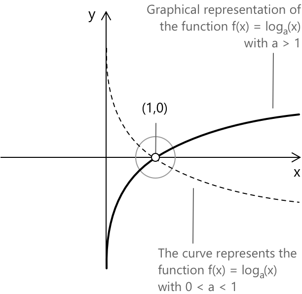

Логарифмічна функція
Вступ
Логарифмічна функція є оберненою до показникової функції. Отже, її область визначення та область значень є інвертованими порівняно з показниковою функцією. Логарифмічна функція визначається як функція вигляду:
\[ y = \log{_a}x \quad \text{де} \quad a \gt 0 \quad a \neq 1 \quad \forall x \in \mathbb{R}^+ \]
При дослідженні логарифмічної функції \( \log_a(x) \) слід розглянути два випадки.
-
Якщо основа \( a > 1 \), функція є зростаючою, тобто вона збільшується зі зростанням \( x \).
-
Якщо \( 0 < a < 1 \), функція є спадаючою, тобто вона зменшується зі зростанням \( x \).

В обох випадках єдиною точкою, в якій логарифмічна функція набуває значення \( 0 \), є \( x = 1 \). Це тому, що: \(\log_a(1) = 0\). Цей результат є правильним, оскільки за означенням, згідно з властивістю степенів, маємо \( a^0 = 1 \).
Значення основи, незалежно від того, чи вона більша за 1, чи знаходиться в проміжку від 0 до 1, відіграє вирішальну роль у багатьох застосуваннях. Зокрема, при роботі з логарифмічними нерівностями основа від 0 до 1 вимагає зміни знака нерівності через спадаючу природу логарифмічної функції.
Властивості
- Область визначення: \( (0, +\infty) \).
- Область значень: \( \mathbb{R} \).
- Корені: \(x=1\).
- Логарифмічна функція є строго зростаючою на \((0,+\infty)\), коли основа задовольняє умову \(a>1\). Якщо \(0<a<1\), функція є строго спадаючою на тому самому проміжку.
- Функція не є ні парною, ні непарною, оскільки вона не визначена для від'ємних значень \( x \).
- Функція є неперервною на \( (0, +\infty) \).
- Функція є диференційовною на всій своїй області визначення, з похідною \( f’(x) = 1/x \).
- Функція не має максимумів або мінімумів на своїй області визначення.
Границі, похідні та інтеграли
Фундаментальна границя, що включає логарифмічну функцію, описує її поведінку біля нуля та на нескінченності та відіграє важливу роль у вивченні логарифмічних функцій. Для логарифмічної функції з основою \(a>1\), коли змінна наближається до нуля справа, значення логарифма необмежено зменшується, тоді як воно необмежено зростає, коли змінна прагне до нескінченності. Ця поведінка формально виражається наступними границями:
\[1. \quad \lim_{x \to 0^+} \log_a x = -\infty \] \[2. \quad \lim_{x \to +\infty} \log_a x = +\infty \]
Коли основа логарифма \( 0 < a < 1 \), маємо:
\[3. \quad \lim_{x \to 0^+} \log_a x = +\infty \] \[4. \quad \lim_{x \to +\infty} \log_a x = -\infty\]
Похідна логарифмічної функції з основою \(a\) може бути отримана шляхом застосування стандартних правил диференціювання для логарифмів. Зокрема, для \(x>0\) та \(a>0\) при \(a\neq 1\), похідна \(\log_a(x)\) по \(x\) визначається як: \[ 5. \quad \frac{d}{dx}\,\log_a(x) = \frac{1}{x\,\ln(a)} \]
Невизначений інтеграл логарифмічної функції з основою \(a\) може бути виведений, згадавши про зв'язок між логарифмами з різними основами. Оскільки: \[ \log_a(x) = \frac{\log(x)}{\log(a)} \]
інтегрування можна звести до інтеграла від натурального логарифма. Використовуючи стандартні методи математичного аналізу, зокрема інтегрування частинами, отримаємо наступний результат: \[ 6. \quad \int \frac{\log(x)}{\log(a)} \, dx = \frac{x\,(\log(x)-1)}{\log(a)} + c \]
Натуральний логарифм
Більш загально, розглянемо функцію \( y = \ln(x) \), натуральний логарифм, маємо: \[7. \quad \ln(x) = \log_e(x)\]
Використовуючи формулу переходу до іншої основи, це можна переписати як: \[8. \quad \ln(x) = \frac{\log_a(x)}{\log_a(e)}\]
Для натурального логарифма \(\ln(x)\), який визначений для всіх \(x>0\), швидкість зміни відносно \(x\) є особливо простою. Дійсно, похідна \(\ln(x)\) задається виразом: \[ 9. \quad \frac{d}{dx}\,\ln(x) = \frac{1}{x} \]
Цей результат відображає той факт, що натуральний логарифм є оберненою функцією до показникової функції \(e^x\), і пояснює, чому \(\ln(x)\) зростає повільно зі збільшенням \(x\).
Важливе інтегральне представлення натурального логарифма включає визначений інтеграл від \(\ln(t)\) на проміжку, що починається з початку координат. Зокрема, розглянемо інтеграл \[ 10 . \quad \int_{0}^{x} \ln(t) \, dt \] який визначений для \(x>0\). Хоча підінтегральна функція \(\ln(t)\) не визначена при \(t=0\), інтеграл інтерпретується як неправильний інтеграл. Його значення можна обчислити за допомогою інтегрування частинами, що дає: \[ \int \ln(t)\,dt = t\ln(t) – t + c \] Застосувавши цю первісну і обчисливши границю при наближенні нижньої межі до нуля, отримаємо: \[ \int_{0}^{x} \ln(t)\,dt = \bigl[t\ln(t) - t\bigr]_{0}^{x} = x\ln(x) - x + 1 \]
Фундаментальним визначеним інтегралом, що містить натуральний логарифм, є \[ 11. \quad \int_{0}^{1} \ln(x) \, dx = -1 \] Цей інтеграл інтерпретується як неправильний інтеграл, оскільки натуральний логарифм не визначений при \(x=0\). Його значення можна отримати, використовуючи первісну \(x\ln(x) – x\) та обчисливши границю на нижній межі. Результат показує, що на проміжку \((0,1)\) переважають від'ємні значення \(\ln(x)\), що призводить до чистої від'ємної площі, що дорівнює \(-1\).
Логарифмічна функція моделює зростання інформації в бінарних рішеннях. Кожен крок у бінарному пошуку відповідає на одне питання «так/ні», що відповідає одному бінарному біту. Це глибока причина того, чому логарифми є фундаментальними в інформатиці та теорії інформації.
Бінарний пошук і логарифмічна функція
Уявімо, що ми хочемо знайти елемент у відсортованому списку з \( N \) елементів. Якщо ми перевірятимемо елементи один за одним, і ціль знаходиться на \( n \)-й позиції, нам може знадобитися до \( n \) кроків, щоб знайти її. Такий підхід відомий як лінійний пошук, і його часова складність у найгіршому випадку становить:
\[ \mathcal{O}(n) \]
Однак лінійний пошук неефективний для великих списків. Чи можна зробити краще? Так — використовуючи алгоритм, який зменшує простір пошуку на кожному кроці. Це приводить нас до бінарного пошуку, який має логарифмічну складність:
\[ \mathcal{O}(\log n) \]
Бінарний пошук — це ефективний алгоритм, що використовується для пошуку цільового елемента у відсортованому списку. Основна ідея проста: на кожному кроці алгоритм ділить список навпіл і залишає лише ту половину, яка може містити ціль. Цей процес триває доти, поки елемент не буде знайдений або поки список більше не можна буде розділити.
На кожному кроці простір пошуку ділиться на 2. Це означає, що якщо початковий список має \( n \) елементів, кількість кроків, необхідних для завершення пошуку, пропорційна кількості разів, скільки ми можемо поділити \( n \) на 2, перш ніж досягнемо 1. Це саме означення логарифма за основою 2:
\[ \text{Кількість кроків} \approx \log_2 n \]
Таким чином, часова складність бінарного пошуку становить:
\[ \mathcal{O}(\log n) \]
Цей зв'язок показує, як логарифмічні функції природним чином описують процеси, що передбачають повторне ділення навпіл, такі як дерева рішень, алгоритми «розділяй і володій» та експоненціальний занепад.
Якщо список містить 1 000 000 елементів, бінарний пошук може знайти будь-який елемент щонайбільше за:
\[ \log_2(1,000,000) \approx 19.9 \]
Отже, потрібно менше 20 кроків — це величезний виграш в ефективності порівняно з лінійним пошуком, який може вимагати до 1 000 000 кроків.